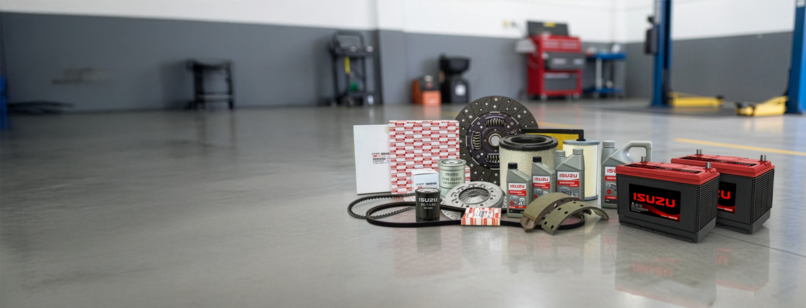
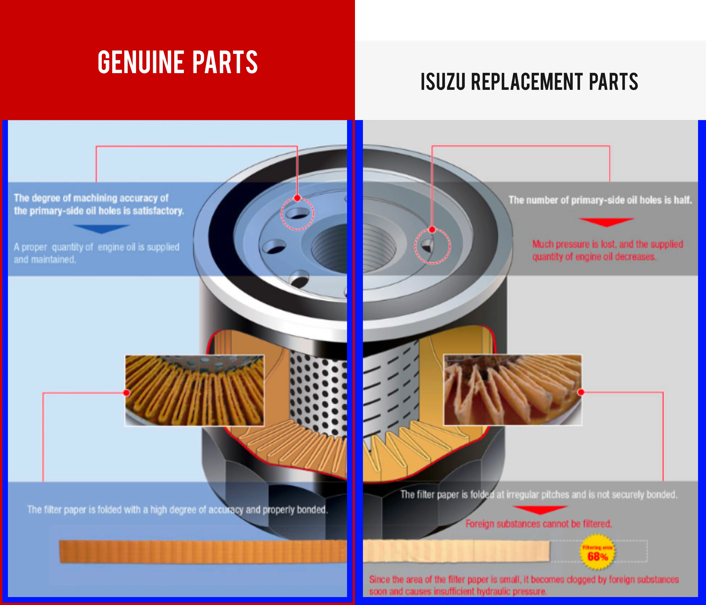

PARTS, ACCESSORIES
GENUINE PARTS
Isuzu Genuine Parts are designed and tested to provide your vehicle’s optimum performance in a long period of time. Isuzu Genuine Parts have been manufactured based on drawings designed or approved by Isuzu Motors. Also, these parts are only sold through supply channels of Isuzu Motors.
To give you a sample of a top notch quality product, here is a close-up comparison between an Isuzu Genuine Oil Filter and a non-genuine oil filter.
OIL-FILTER-GENUINE VS NON-GENUINE

For more details, please call or visit Isuzu Dealer now!
BACK TO PREVIOUS PAGE